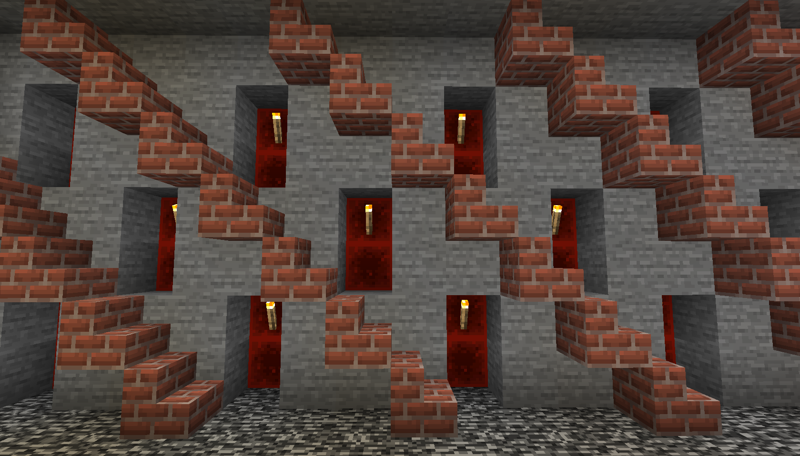

Cette technique de minage optimisé permet de voir un maximum de blocs autour de vous et d'être sûr de ne laisser pas un seul diamant dans votre sillage.
Au plus bas, vous marchez sur le bloc de la couche 5 — la couche la plus haute pouvant avoir de la bedrock. Montez en hauteur de 10 blocs, donc 5 rangées de tunnels. Vous serez alors sur le bloc de la couche 13, et vous verrez au dessus de votre tête le bloc de la couche 16. Maintenant que vous savez où et comment miner de façon la plus efficace possible, à vous les diamants !